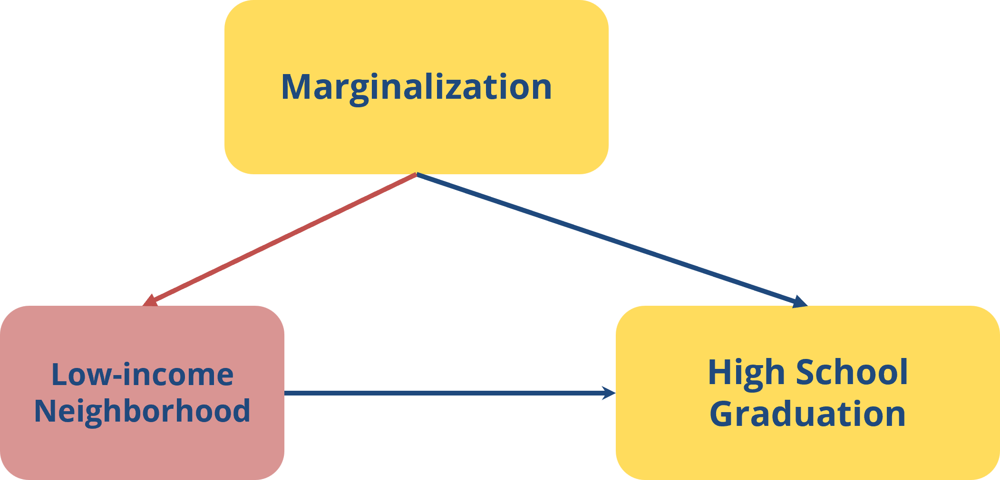
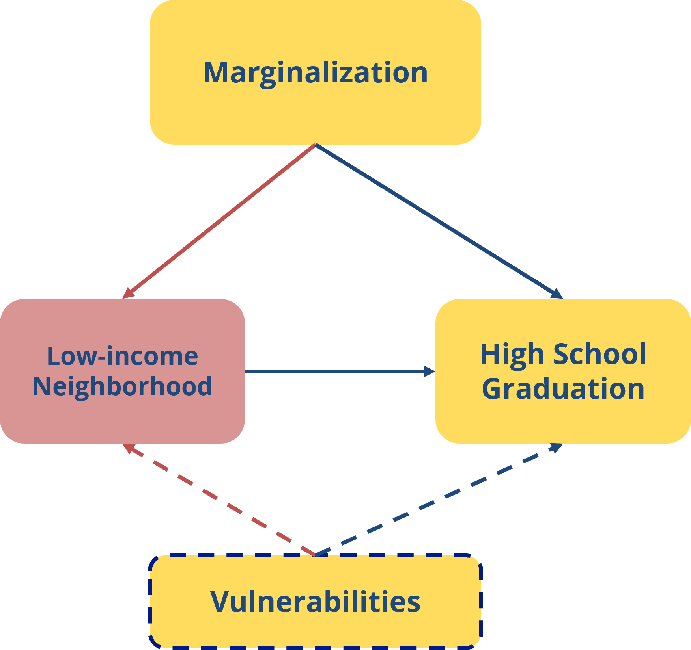
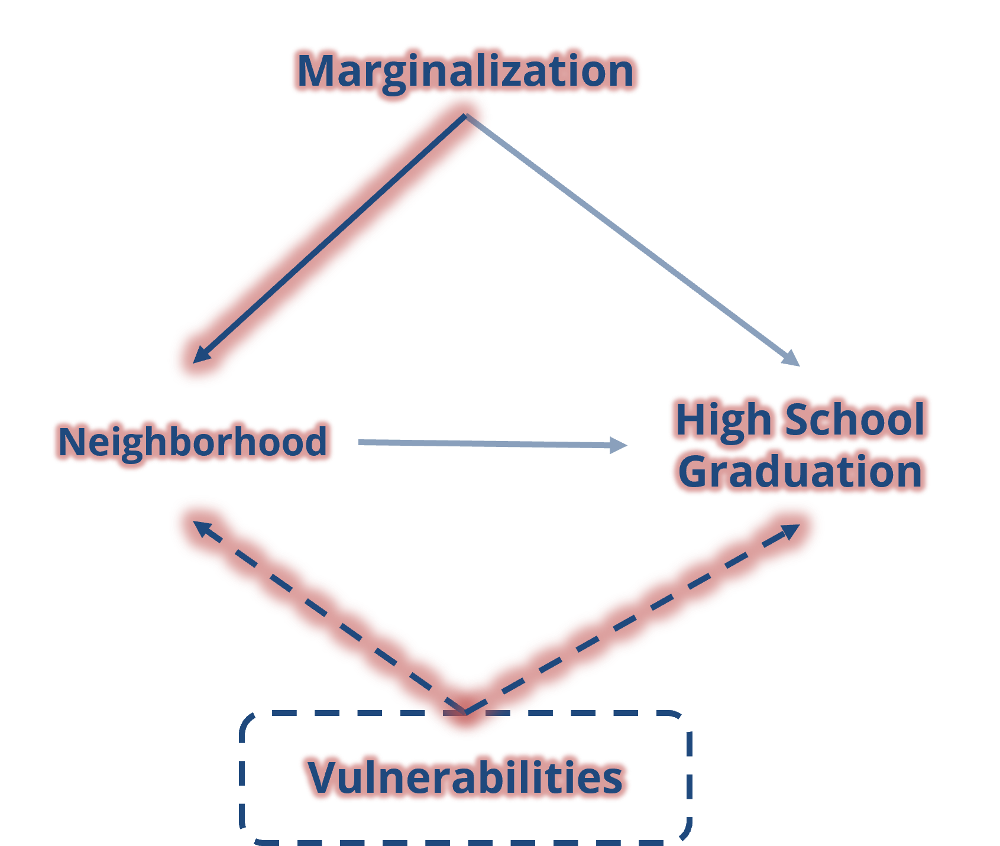
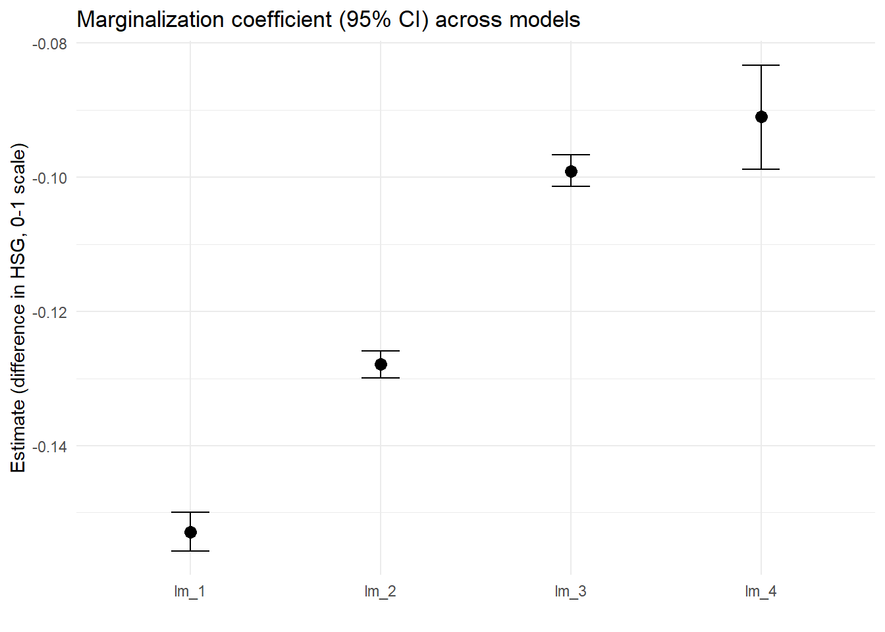

(note, the R code used to generate this page can be downloaded here)
We’re interested in estimating the impact of discrimination (referred to as marginalized or marginalization going forward) on educational outcomes (we could look at any number of different education-related outcomes; today, we’ll focus on high school graduation in a city where lower-income neighborhoods carry a higher risk of exposure to environmental hazards than higher-income neighborhoods. We’ll focus specifically on the risk of exposure to lead, a toxin associated with cognitive and behavioral impairments, via chipped paint and lead-contaminated dust in older homes that may not have been properly maintained over the years.
We start by sketching a simple graphical model (a Directed Acyclic Graph or DAG) representing a hypothesized explanation of the ways in which marginalization impacts high school graduation. Each variable in the DAG is represented by a node, while an edge or arrow between two nodes indicates a causal relationship in the direction of the arrow.
This model proposes two pathways through which marginalization can shape high school graduation

Questions:
Can you identify the direct and indirect pathways connecting marginalization to high school graduation?
In addition to the direct & indirect pathways connecting marginalization to high school graduation, there is one more causal pathway shown in this model. What is it? (i.e., ‘X has a direct/indirect impact Y’)
Can you think of a plausible reason (or reasons) for the hypothesized relationships between marginalization, low-income neighborhood, and high school graduation that are shown in the DAG below?
We know that not everyone experiences identical educational outcomes. Do you think this model does a good job of explaining why different people have different educational experiences (whether high school graduation or educational outcomes more broadly)?
A more realistic DAG recognizes that factors other than discrimination may lead to living in low-income neighborhoods. We’ll refer to these factors as vulnerabilities (V).
What are some possible examples of V?
Once included as a variable in the model, we notice that while V does influence low-income neighborhood, it doesn’t only influence low-income neighborhood. It may also influence high school graduation; to reflect this, we connect these variables with a causal edge. These Vulnerabilities are often difficult to observe, and thus difficult to identify in data, which we note using a dotted contour.
The updated DAG looks like this:

Now, let’s say our data was restricted to a school district where the majority of students face poverty. In other words, if, in our data, low-income neighborhood is a binary variable where 1 == “low-income neighborhood” and 0 == “higher-income neighborhood”, low-income neighborhood is fixed at 1 (and no longer a variable, as it doesn’t vary).
In this scenario, we are “selecting” on low-income neighborhood (a collider), which opens up a non-causal pathway between marginalization and high school graduation.
The updated DAG looks like this:

How does selection on a collider bias our estimates on the causal effect of discrimination on high school graduation?
To explore this question, we will simulate data that mirrors the relationships specified in our DAG. The data simulation also needs to make assumptions about the statistical characteristics of the data such as distributional forms and parameters. In reality, we would work with real data, make distributional assumption and estimate parameters under those assumptions. However, simulated data works well to illustrate collider bias as we can see how the “real” (simulated) parameters compare to those estimated when bias is present.
set.seed(123)
tb <- tibble(
Marginalization = sample(c(0,1), size = 100000, replace = TRUE, prob = c(.65, .35)),
Vulnerabilities = rnorm(100000),
Poor_Nbhd = ifelse(
(Vulnerabilities > 1.5 & Marginalization == 0) |
(Vulnerabilities > 0.842 & Marginalization == 1), 1, 0),
HSG_01 = plogis(1.99 - Marginalization - Vulnerabilities - 0.5 * Poor_Nbhd + rnorm(100000, mean = 0, sd = 1))
)Let’s examine the data we just created. What do you notice when comparing:
In this table, the mean values for Marginalization and Poor_Nbhd can be interpreted as ‘the probability that a student belongs to a marginalized group’ and ‘the probability that a student lives in a low-income neighborhood’, respectively.
These probability statements can also be written as:
P(Marginalization) and
P(Poor_Nbhd)
If we look only at the subset of students living in a low-income neighborhood, the mean value of Marginalization can be interpreted as ‘the probability that a student belongs to a marginalized group, given that they live in a low-income neighborhood’, or
P(Marginalization|Poor_Nbhd == 1)
And if we focus only on students living in non-low-income neighborhoods, the mean value of Marginalization can be interpreted as ‘the probability that a student belongs to a marginalized group, given that they live in a higher-resourced neighborhood’, or
P(Marginalization|Poor_Nbhd == 0)
Next let’s see how the variables in our simulated data are correlated with one another overall, and among the subset of student living in low-income neighborhoods.
What is the correlation coefficient on marginalization and vulnerabilities in the full sample? Do they have a strong relationship?
What about when we restrict our data to students living in low-income neighborhoods? What is the nature of the relationship between marginalization and vulnerabilities now?
See how marginalization and vulnerabilities are NOT correlated in the entire sample, but for the data on students in low-income neighborhoods only, marginalization and vulnerabilities appear to be negatively correlated.
This is a product of selecting on a collider and leads to bias in our estimation of causal effects of marginalization on high school graduation.
lm_1 <- lm(HSG_01 ~ Marginalization, data = tb) # Total effect of Marginalization on HSG -
summary(lm_1)##
## Call:
## lm(formula = HSG_01 ~ Marginalization, data = tb)
##
## Residuals:
## Min 1Q Median 3Q Max
## -0.79177 -0.10909 0.07004 0.15514 0.34431
##
## Coefficients:
## Estimate Std. Error t value Pr(>|t|)
## (Intercept) 0.8076057 0.0008612 937.8 <2e-16 ***
## Marginalization -0.1528826 0.0014578 -104.9 <2e-16 ***
## ---
## Signif. codes: 0 '***' 0.001 '**' 0.01 '*' 0.05 '.' 0.1 ' ' 1
##
## Residual standard error: 0.2197 on 99998 degrees of freedom
## Multiple R-squared: 0.09909, Adjusted R-squared: 0.09908
## F-statistic: 1.1e+04 on 1 and 99998 DF, p-value: < 2.2e-16lm_2 <- lm(HSG_01 ~ Marginalization + Poor_Nbhd + Vulnerabilities, data = tb) # Direct Effect of Marginalization on HSG - Unbiased
summary(lm_2)##
## Call:
## lm(formula = HSG_01 ~ Marginalization + Poor_Nbhd + Vulnerabilities,
## data = tb)
##
## Residuals:
## Min 1Q Median 3Q Max
## -0.70530 -0.07972 0.02094 0.09927 0.62752
##
## Coefficients:
## Estimate Std. Error t value Pr(>|t|)
## (Intercept) 0.8223337 0.0006044 1360.7 <2e-16 ***
## Marginalization -0.1278791 0.0010295 -124.2 <2e-16 ***
## Poor_Nbhd -0.2020323 0.0018901 -106.9 <2e-16 ***
## Vulnerabilities -0.1142652 0.0005884 -194.2 <2e-16 ***
## ---
## Signif. codes: 0 '***' 0.001 '**' 0.01 '*' 0.05 '.' 0.1 ' ' 1
##
## Residual standard error: 0.1507 on 99996 degrees of freedom
## Multiple R-squared: 0.5764, Adjusted R-squared: 0.5764
## F-statistic: 4.535e+04 on 3 and 99996 DF, p-value: < 2.2e-16lm_3 <- lm(HSG_01 ~ Marginalization + Poor_Nbhd, data = tb) # Conditioning on poor neighborhoods, Direct effect of Marginalization on HSG is biased - controlling on a collider
summary(lm_3)##
## Call:
## lm(formula = HSG_01 ~ Marginalization + Poor_Nbhd, data = tb)
##
## Residuals:
## Min 1Q Median 3Q Max
## -0.78676 -0.09549 0.04817 0.12551 0.64084
##
## Coefficients:
## Estimate Std. Error t value Pr(>|t|)
## (Intercept) 0.836527 0.000704 1188.24 <2e-16 ***
## Marginalization -0.099058 0.001196 -82.86 <2e-16 ***
## Poor_Nbhd -0.418209 0.001793 -233.30 <2e-16 ***
## ---
## Signif. codes: 0 '***' 0.001 '**' 0.01 '*' 0.05 '.' 0.1 ' ' 1
##
## Residual standard error: 0.1768 on 99997 degrees of freedom
## Multiple R-squared: 0.4166, Adjusted R-squared: 0.4166
## F-statistic: 3.571e+04 on 2 and 99997 DF, p-value: < 2.2e-16lm_4 <- lm(HSG_01 ~ Marginalization, data = tb[tb$Poor_Nbhd == 1,]) # Conditional, Direct effect of Marginalization on HSG is biased
summary(lm_4)##
## Call:
## lm(formula = HSG_01 ~ Marginalization, data = tb[tb$Poor_Nbhd ==
## 1, ])
##
## Residuals:
## Min 1Q Median 3Q Max
## -0.39761 -0.16724 -0.02854 0.14277 0.63766
##
## Coefficients:
## Estimate Std. Error t value Pr(>|t|)
## (Intercept) 0.413441 0.003077 134.38 <2e-16 ***
## Marginalization -0.091002 0.003954 -23.01 <2e-16 ***
## ---
## Signif. codes: 0 '***' 0.001 '**' 0.01 '*' 0.05 '.' 0.1 ' ' 1
##
## Residual standard error: 0.2064 on 11405 degrees of freedom
## Multiple R-squared: 0.04438, Adjusted R-squared: 0.04429
## F-statistic: 529.6 on 1 and 11405 DF, p-value: < 2.2e-16We see, in fact, that this negative effect is the strongest in the model with all variables including vulnerabilities and the smallest when collider bias is present.
This is an example of how, even when we have population data (meaning data from all students in a school district), our estimates may carry bias.
##
## ==========================================================================
## Dependent variable: High School Grad Probability
## ----------------------------------------------------------
## HSG_01
## Total Effect Direct Effect Total Effect -V Direct Biased
## (1) (2) (3) (4)
## --------------------------------------------------------------------------
## Marginalization -0.153*** -0.128*** -0.099*** -0.091***
## (0.001) (0.001) (0.001) (0.004)
##
## Poor_Nbhd -0.202*** -0.418***
## (0.002) (0.002)
##
## Vulnerabilities -0.114***
## (0.001)
##
## Constant 0.808*** 0.822*** 0.837*** 0.413***
## (0.001) (0.001) (0.001) (0.003)
##
## --------------------------------------------------------------------------
## Spec details: Unbiased Unbiased V unobs.total V unobs. direct
## Observations 100,000 100,000 100,000 11,407
## R2 0.099 0.576 0.417 0.044
## ==========================================================================
## Note: *p<0.1; **p<0.05; ***p<0.01

A salient example of collider bias was featured in a study that used police records (selected sample) to estimate the effects of segregation on use of force by police and erroneously found minimal effects. https://jmummolo.scholar.princeton.edu/publications/bias-built-how-administrative-records-mask-racially-biased-policing
Look for other cases of collider bias in public health and social welfare to become familiar with this type of bias and its potential impact on social policy. https://pmc.ncbi.nlm.nih.gov/articles/PMC6452862/
Last updated on 06 October, 2026